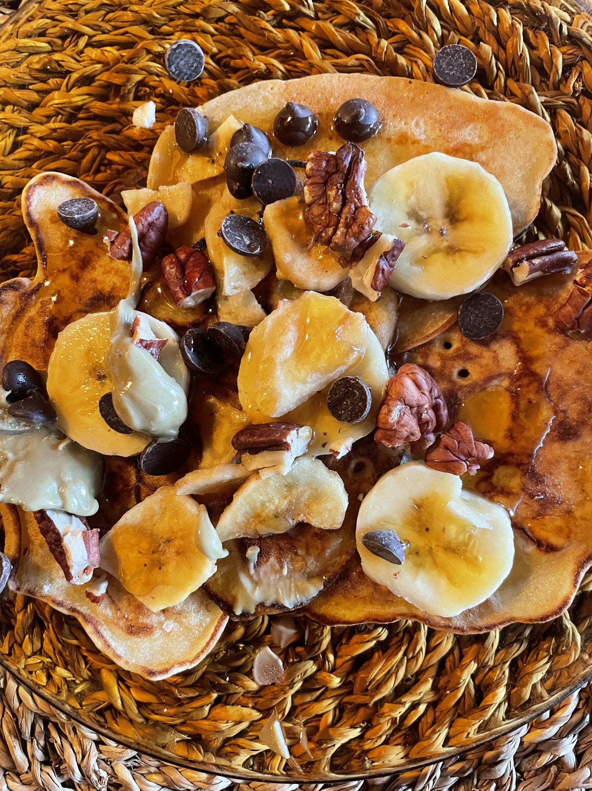

Tortitas con plátano, pecanas y chocolate
Ingredients
2×
- 150 g de harina
- 1 cdta de levadura
- pizca de sal
- 1 huevo
- 200 ml de leche
- mantequilla
- 1 plátano
- 1 puñado de pecanas
- 1 cda de pepitas de chocolate
- sirope de arce
- crema de frutos secos

Preparación
Paso 1
Mezclar 150 g de harina, 1 cdta de levadura, una pizca de sal, 1 huevo y 200 ml de leche.
Paso 2
Cocinar las tortitas en una sartén con un poco de mantequilla, 2min por cada lado.
Paso 3
Servir con 1 plátano en rodajas, 1 puñado de pecanas, 1 cda de pepitas de chocolate, sirope de arce y un poco de crema de frutos secos.